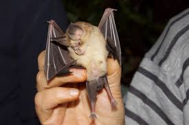
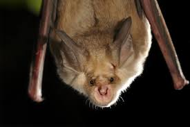

Galeria

- 
- 
Vulnerable
Decreixent
Pelatge marró grisenc pel dors i gairebé blanc pel ventre, amb una línia de separació ben marcada entre les dues coloracions. Al voltant dels ulls, hi té una màscara que pot ser molt conspícua. Les orelles i el patagi són del mateix color que el dors, de vegades en un to morat.
Habita al nord d'Àfrica, la part sud de la península Ibèrica, a l'illa de Mallorca[1], Sicília, Sardenya, Dalmàcia, Grècia, Bulgària, Anatòlia, el Caucas, determinats punts de l'Orient Pròxim i Xipre.